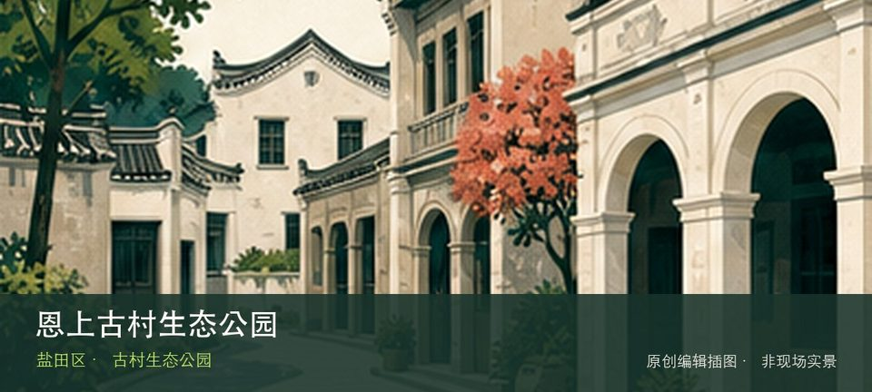

适合谁
适合建筑、地方史和社区观察者；参观时须尊重居民、宗教礼仪与生产秩序。

SHENZHEN GUIDE · 117
海山街道恩上公路恩上水库旁 · 古村生态公园
恩上古村生态公园位于海山街道恩上公路恩上水库旁，古村遗存、山林和水库视野共同构成半山慢行节点，适合与恩上水库路线分段组合。现场的空间线索集中在恩上古村遗存和半山水库视野，把两者连起来看，才不会只剩一个笼统印象。阅读这处地点要把恩上古村遗存与半山水库视野放回仍在使用的街巷或社区中，不把历史空间当成布景。先看公开区域，再按居民生活、礼仪和开放边界调整停留，不进入封闭建筑。
WHY GO
适合建筑、地方史和社区观察者；参观时须尊重居民、宗教礼仪与生产秩序。
先从恩上古村生态公园公开入口确认路线，用恩上古村遗存建立方向感；只有在时间、天气都允许时才追加半山水库视野。
公共交通先到海山街道恩上公路恩上水库旁片区，再以恩上古村生态公园公开参观入口为终点；多入口地点须按计划游线选择入口，并预先锁定返程站点。
车辆停在恩上古村生态公园外围正规公共停车场后步行进入；不驶入窄巷，不占居民门口、作业区或消防通道。
10 月至次年 4 月步行较舒适；夏季避开正午，雨天留意石板、台阶和老建筑周边湿滑。
NEARBY IDEAS